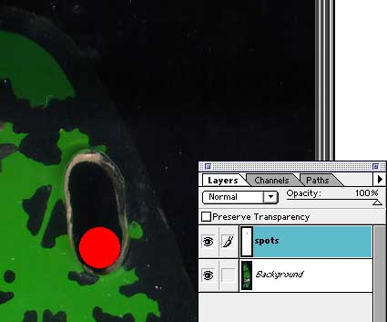

Use a separate layer to draw the spots that mark holes for posts. Draw the spots in a color that is greatly different from the rest of the image.
Entire article and photographs copyright © 1998 Dan Wilga. All rights reserved. May not be reprinted without permission.